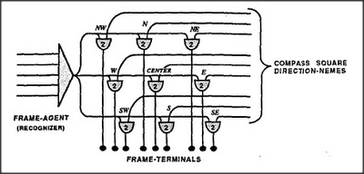

Now that we've seen how picture-frames could represent memories of spatial arrangements, let's ask how we actually build such frames. We'll use the same technique that we used to build Trans-frames, except for one small change. To make a picture-frame, we'll simply replace the pronomes of our Trans-frame scheme by a set of nine direction-nemes! The diagram below also includes an agent to serve for turning on the frame itself.
To apply the picture-frames idea to how our vision-systems work, imagine that you're looking at some real-world scene. Your eyes move in various directions, controlled in some way by direction-nemes. Now suppose that every time you move your eyes, the same direction-nemes also activate the K-lines attached to the corresponding terminals of a certain vision-frame. Suppose, also, that those K-lines are ready to form new memories. Then each time you look in a different direction, your vision-system will describe what you see — and the corresponding K-line will record what you see when you look in that direction!
Now suppose that the same frame is activated at some later date — but this time by means of memory and not from looking at some scene. Then, as any of your agencies conceives of looking in a certain direction, the thought itself will involve the activation of the corresponding direction-neme; then, before you have a chance to think of anything else, the corresponding K-line will be aroused. This creates a most remarkable effect:
Whichever way your mind's eye looks, you'll seem to see the corresponding aspect of the scene. You will experience an almost perfect simulus of being there!
How real could such a recollection seem? In principle, it could even seem as real as vision itself — since it could make you seem to sense not only how an object looks, but also how it tastes and feels. Shortly we'll see how this could yield not merely the sense of seeing a scene, but also the sense of being able to move around inside it.